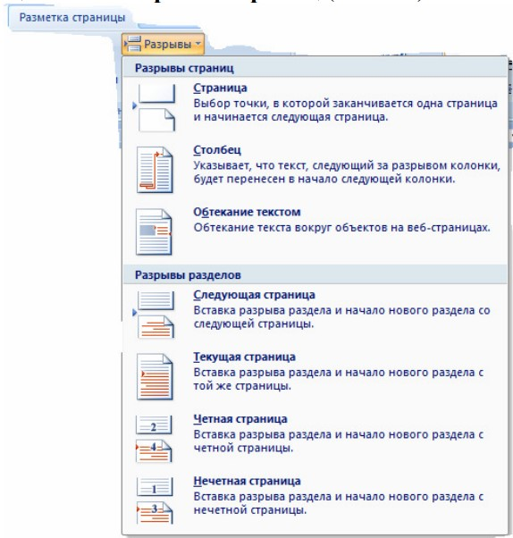
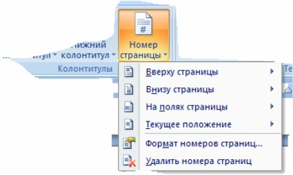
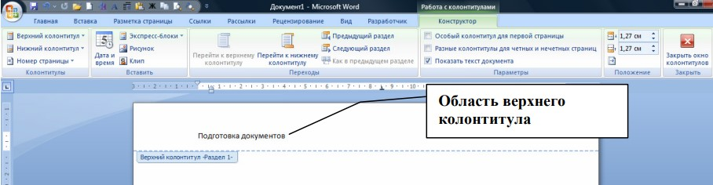
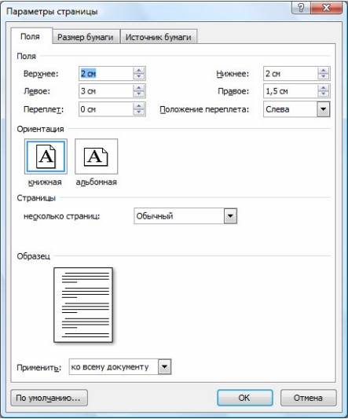

Подготовка документа к печати
Разбиение документа на страницы и разделы
MS Word производит автоматическое разбиение на страницы по мере набора текста. При заполнении страницы текстом и рисунками в документ вводится автоматический (мягкий) разрыв страницы и начинается следующая страница. Чтобы поместить разрыва страницы в определенном месте, следует ввести принудительный (жесткий) разрыв страницы.
Для установки жесткого начала страницы:
- Установите курсор в том месте документа, где вы хотите начать новую страницу.
- Вкладка Разметка страницы - Разрывы
- В открывшемся списке Разрывы страниц щелкните по ссылке Страница в поле Разрывы страниц

Рис. Список Разрывы
Нумерация страниц. Колонтитулы
Нумерация страниц
Для удобной работы с большими документами, необходимо отображать номера страниц. MS Word обеспечивает различные варианты размещения и начертания нумерации страниц. Номера страниц размещаются в специальных областях – колонтитулах, и пересчитываются автоматически, по мере редактирования документа.
Для добавления в документ нумерации страниц выполните следующие действия:
- Вкладка Вставка - Группа Колонтитулы - Номер страницы. Появится список для выбора положения нумерации
- Выберите нужное расположение номера на странице: Вверху страницы или Внизу страницы и т. д.
- В открывающихся коллекциях выберите требуемый вид номеров страниц
- Нажмите ОК.

Рис. Нумерация страниц
Использование колонтитулов
Колонтитулы – это области, расположенные в верхнем (верхний колонтитул) или нижнем (нижний колонтитул) поле каждой страницы документа. В верхнем и нижнем колонтитулах можно, прежде всего, указать номер страницы, а также поместить в них названия разделов, имена авторов и любую другую информацию по вашему усмотрению. Информация, внесенная в область колонтитулов, автоматически копируется на всех страницах документа или текущего раздела документа.
Вставка и редактирование верхнего и нижнего колонтитулов
Чтобы вставить в документ верхний или нижний колонтитул или изменить содержание колонтитулов, проделайте следующее:
- Вкладка Вставка - группа Колонтитулы - Верхний колонтитул в открывающейся коллекции выберите требуемый вид колонтитула. MS Word переключится в режим редактирования верхнего колонтитула и выведет на экран область верхнего колонтитула текущего раздела, отчерченную непечатаемой пунктирной линией. сновной текст документа станет "бледным" и на ленте появится вкладка Конструктор.
- Задайте текст верхнего колонтитула и при необходимости перейдите в нижний колонтитул нажатием кнопки Перейти к нижнему колонтитулу. Для создания колонтитулов используйте обычную технику ввода, редактирования и форматирования текста в документах MS Word.
- Когда завершите редактирование колонтитулов, нажмите кнопку Закрыть окно колонтитулов, чтобы вернуться к документу.

Рис. Создание колонтитулов
Печать документа
Установка параметров страницы
По умолчанию MS Word задает размер печатных страниц 210 х 297 мм (формат бумаги А4) и книжную ориентацию страницы. При желании вы можете изменить эти установки. Для изменения параметров страницы выполните следующее:
Вкладка Разметка страницы - кнопка открытия диалоговое окно Параметры страницы
- Появится диалоговое окно Параметры страницы (Page Setup)
- На вкладке Поля (Margins)
- Установите Поля (Margins) документа — расстояние от края листа до текста.
- Задайте ориентацию страницы — книжная (Portrait) или альбомная (Landscape).
- В разделе Страницы (Multiple pages) выберите Зеркальные поля (Mirror Margins), чтобы поля страниц отображались зеркально относительно внутренней стороны страницы.
- В поле Применить (Apply to) выберите из списка к чему данные параметры будут применены.
- В поле Образец (Preview) отображается образец страницы в соответствии с установленными параметрами.

Рис. Параметры страницы
- На вкладке Размер бумаги (Paper) выберите размер.
- В поле Применить (Apply to) выберите из списка к чему данные параметры будут применены.
- На вкладке Источник бумаги (Layout) вы можете определить различные колонтитулы для четных и нечетных страниц документа, задать вертикальную ориентацию текста на странице в поле Вертикальная выравнивание (Vertical Alignment.
- В поле Применить (Apply to) выберите из списка к чему данные параметры будут применены.
- Нажмите ОК.
MS Word вернет вас в документ и настроит его в соответствии с установленными параметрами.